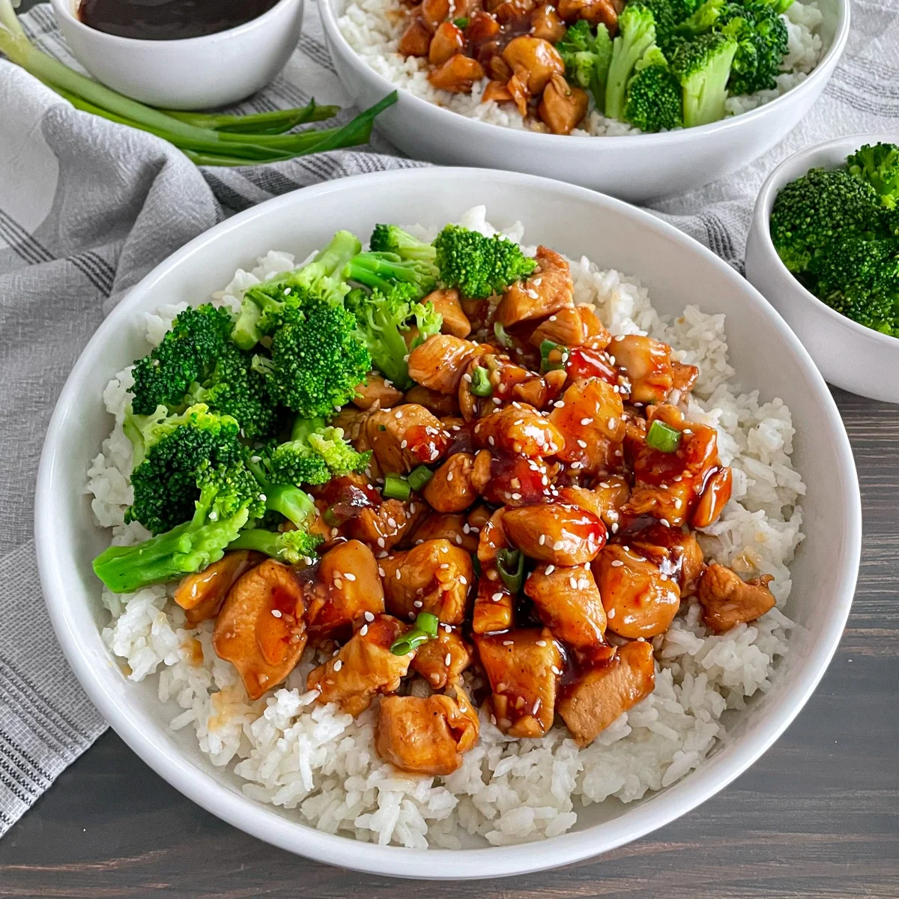

Recipe for Chicken teriyaki
Click here to return to the main page

Description
This recipe of chicken teriyaki will surely impress anyone coming to your place, leaving you with the feeling of accomplishment
While preparing the pans and plates would sound like a good idea, let's first make sure we have everything prepared to actually cook(unless you're experimenting on your own with different ingredients)
ingredients
For this recipe we will need:
- 2 table spoons of lightly toasted sesame oil
- 6 skinless and boneless chicken thighs(sliced)
- 2 large garlic cloves(crushed)
- 1 thumb-sized piece of grated ginger
- 50g of honey
- 30Ml of soy sauce
- 1 spoon of vinegar
- sticky rice for serving
Now that we know the ingredients, let's get to the fun part!
Cooking step by step
While cooking may look scary at first, rest assured that these steps will be very easy to follow!
- Heat the oil in a non-stick pan over a medium heat
- Add the chicken and fry for 7 mins, or until golden
- Add the garlic and ginger and fry for 2 mins
- Stir in the honey, soy sauce, vinegar and 100ml water
- Bring to the boil and cook for 2 - 5 mins over a medium heat until the chicken is sticky and coated in a thick sauce
- Serve with cooked rice
Conclusion
Now that we finished the recipe, we can enjoy ourselves a good meal, i hope you had fun following along with the recipe, and maybe you'll check out the other recipes too